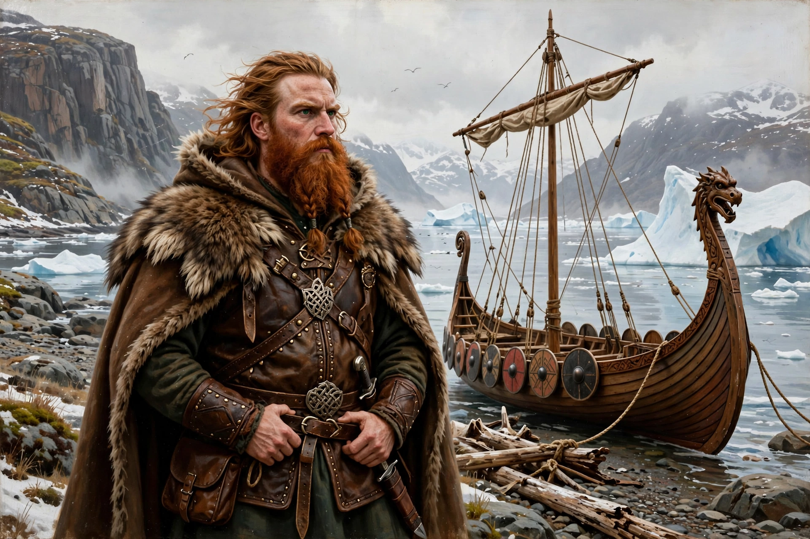

Erik Thorvaldsson (c. 950 – c. 1003), known as Erik the Red, was a Norse explorer remembered in Icelandic sagas as the founder of the first European settlement in Greenland. Exiled from Iceland for manslaughter, he explored Greenland's southwestern coast in 982–985 and named it Greenland — according to the sagas, to attract settlers. He was the father of Leif Erikson, who reached North America.

| Erik the Red | |
|---|---|
| Born | c. 950, Norway |
| Died | c. 1003, Greenland |
| Known for | Founding Norse Greenland settlement |
| Children | Leif, Thorvald, Thorstein, Freydís |
Erik's father Thorvald was exiled from Norway to Iceland; Erik himself was outlawed for killings connected to disputes at Haukadalur. Sailing west, he explored Greenland, wintered there, and returned to Iceland to recruit colonists. About 25 ships sailed in 985/986; 14 arrived, founding the Eastern and Western Settlements. Erik ruled from his farm Brattahlíð. He died in an epidemic shortly after Leif's return from Vinland.